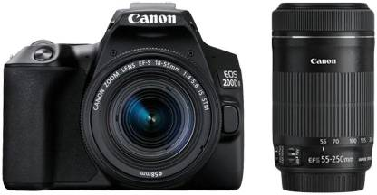
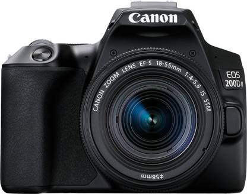
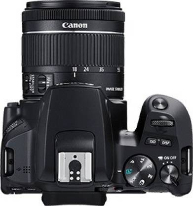
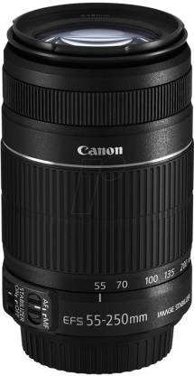

Home/Cameras
Canon EOS 200D II DSLR Camera EF-S 18 - 55 mm IS STM and 55 - 250 mm IS STM (Black)
₹62,999/-
Is photography one of your passions? Bring home this EOS 200D II from Canon. This is Canon’s lightest DSLR that features a vari-angle LCD touch screen. It features a 24.1-megapixels APS-C CMOS sensor and a DIGIC 8 processor that capture stunning images. The EOS 200D II also has a lot of other features that make everyday photography a lot easier.
Effective Pixels: 24.1 MP Sensor Type: CMOS WiFi Available Full HD